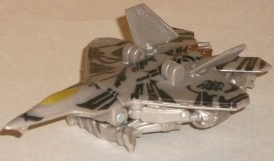
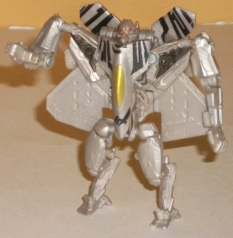
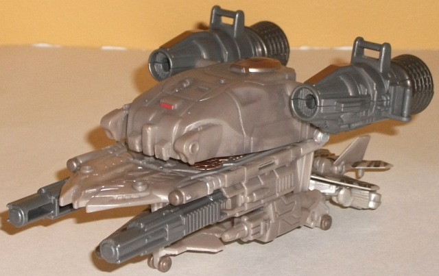
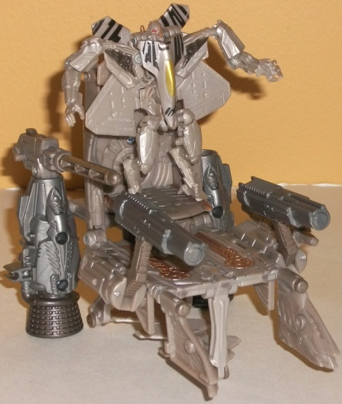

Starscream
w/ Orbital Assault Carrier
Starscream
w/ Orbital Assault Carrier
Allegiance
: Decepticon
Size
: Cyberverse Vehicle Set
Difficulty of Transformation of Robot
:
Very Easy
Difficulty of Transformation of Base
:
Very Easy
Color Scheme
: Light milky tannish
gray, bluish gray, and some dark metallic gunmetal gray, black, pale light
metallic gold, metallic bronze, and red
Figure Rating
: 5.7
Base Rating
: 5.0


Starscream finally has
a new legion-class figure-- one badly needed, given how bad his
previous
one
looked. In vehicle mode, Starscream is still his F-22 fighter jet
self, complete with Cyberglyph tattoos. As I've said before many times
about his markings, I love the intricacy of them here, and they really
help to make a mode visually interesting that otherwise would look rather
boring. After all, literally all of Starscream's plastic is of a rather
ugly light milky tannish gray color. There's ways to make this color look
good, but this version of him doesn't employ those methods. Still, at least
here the Cyberglyphs-- along with the bit of copper and gold detailing--
can make one easily overlook it. There's quite a lot of robot mode kibble
on the underside of this mode, but it mostly tends to stick underneath
the wings-- the feet are the only things that REALLY stick out annoyingly.
The top "jet" portion of the vehicle mode is quite good and looks proportional,
and two of his tailfins can also be repositioned as they're on ball joints,
which is appreciated.
Starscream's robot mode
could definitely use some improvement, but honestly after his disaster
of a first Legend/Legion class figure he looks better here. His main wings
jut out REALLY blatantly from his sides in a manner wholly unlike how they
incorporate with his robot mode in the movie, and is my main beef with
him here. The rear part of his vehicle mode also simply collapses against
his upper back, though at least they mostly stay out of the way visually--
I wish they pegged into something, though, as they tend to flop around
a little too easily. The arms are also a bit odd-looking, as the pieces
that connect them to his chest try to imitate his extended cockpit-chest
look in robot mode, but it doesn't really succeed, and instead make his
waist look practically insubstantial while his shoulders are too wide even
for Movieverse Starscream. That said, he mold detailing on this figure
is quite good, particularly on the arms and legs, and his head has some
nice paint detailing on it with the eyes a nice red to really contrast
against Starscream's base colors. His articulation is also slightly above-average
for a Legion class figure-- he can move at the shoulders (at two points),
elbows, and hips (at two points). I really wish he had some knee movement,
but at such a small scale I couldn't reasonably ask for anything more.


Starscream's Orbital
Asssault Carrier is, in its vehicle mode, meant to be a replica of the
little spaceships all the generic Decepticons use to take over Chicago
in the movie. It's pretty accurate for the most part, with nice proportions
and excellent mold detailing that is accented by a slight black paint wash
on many of the details on the main body of the vehicle. The exception to
this is that the bottom of this mode extends downwards too far, leaving
a rather empty, ugly hollow shell beneath the side-mounted guns. The color
scheme also unfortunately largely borrows from Starscream's in terms of
its main color, but to be fair this is rather accurate to their appearance
in the movie. The copper detailing here-- and on parts of the base mode--
really helps where it's applied near the rear of the vehicle, and the nice
metallic gunmetal gray also works wonderfully on the excellently-detailed
rear thrusters, which can each move up and down. There's also a few areas
for C-clip weapons to attach in this mode-- particularly on the thrusters--
as well as little holes to hold Cyberverse-sized weapon accessories. And
speaking of weapon accessories, there's a spring-loaded missile launcher
that comes with the toy that can be held in a few places on the toy, but
sadly the peg size is too large to be held by the Starscream figure.
The base mode looks
a bit more like a flying throne, which I suppose is certainly appropriate
for Starscream. The sides of the vehicle flip up so that the main guns
can move up and down a little (at two different points), while the front
of the vehicle splits in half and rotates downards to become less obvious.
Unfortunately, the hinges that you use to flip these side sections up are
way too weak to hold up the weight, and they tend to flop right back down.
There's also still that ugly hollow section on the bottom that this mode
only makes more obvious. On a positive note, the mold detailing on this
toy, particularly in this mode, is very good, with little ornate and mechanical
details all over the "throne", thrusters, and guns.
Overall, the Starscream w/ Orbital Assault Carrier is definitely one of the weakest-- if not THE weakest-- of the Cyberverse Vehicle sets, as the set has a weak base/throne mode and is best just left in its vehicle mode. The Starscream figure is a definite improvement over his previous movieverse Legends/Legion toy, but that's a pretty low bar to jump over-- there's still some definite kibble problems in both modes and his arms are molded in a really weird fashion. If you really want an Orbital Assault Carrier toy from the movie or a movie-accurate-colored tiny version of the new, better legion Starscream figure, this is a mild recommendation, but otherwise skip it.
Review by Beastbot